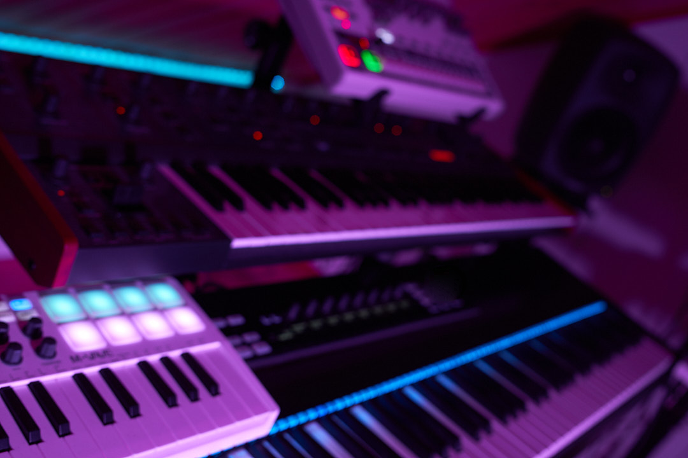
One app for the whole show. A full DAW to compose music, design sound, build reactive visuals, and run the lights — all on Mac, iPad, and iPhone.
A DAW with hidden depth
Skene opens to a familiar DAW — tracks, clips, a piano roll, and a mixer — with every instrument and effect living in a per-track rack. Anything you can see, you can automate and modulate: every knob, fader, and parameter is a live, performable control.
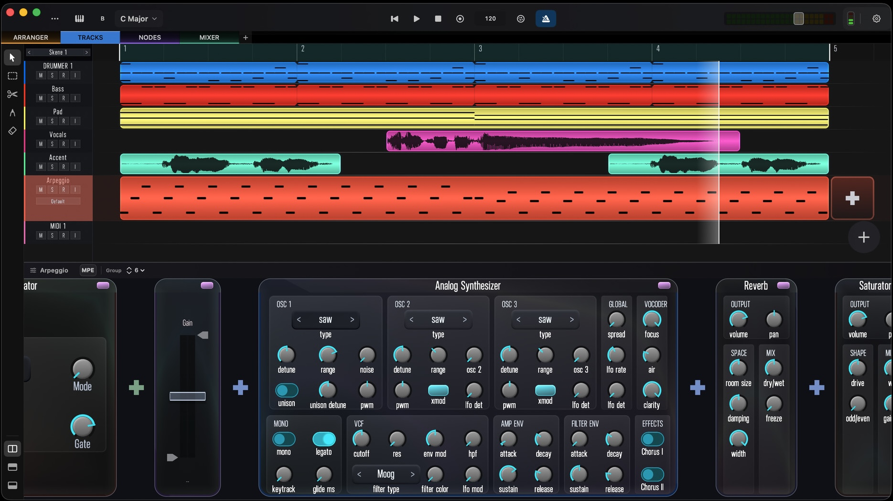
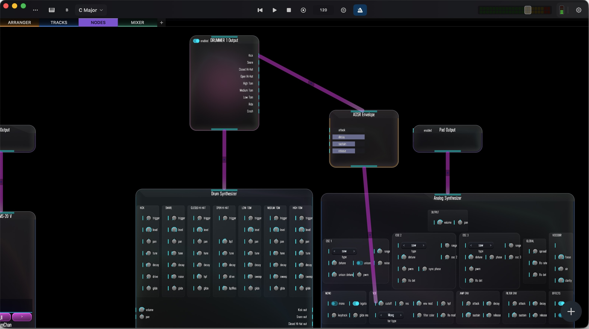
What you see is a DAW. Open up any device and the same project becomes a node graph, where every parameter is a port you can patch modulation, audio, and control into — the hidden depth behind the timeline.
Every note at your fingertips
A grid of multi-touch note pads built for MPE. Press and hold, then slide a finger sideways to bend the pitch and up or down to sweep the filter cutoff — each note shaped on its own, so chords and leads come alive under your hands.
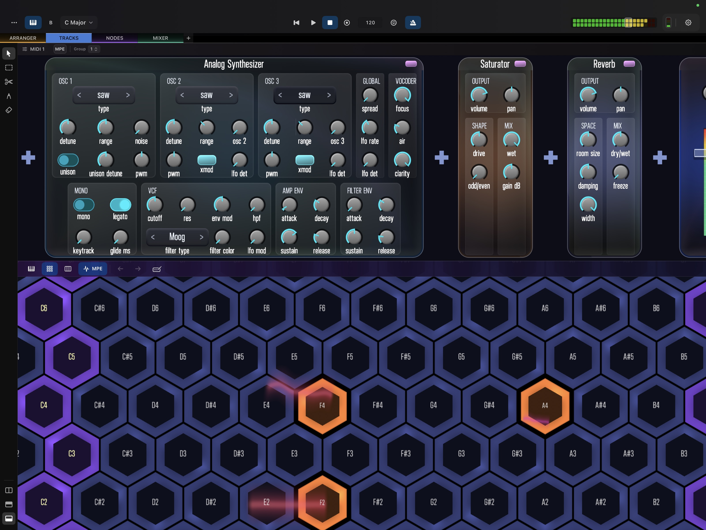
See it in action
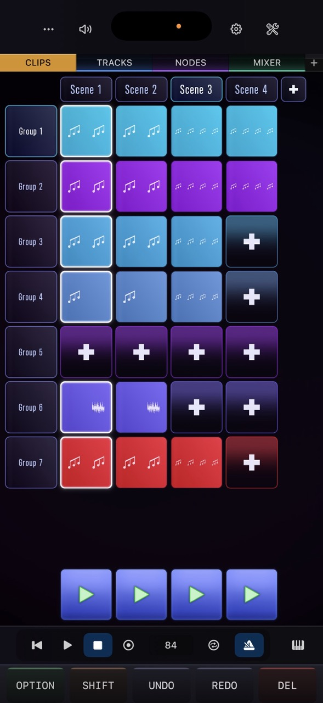
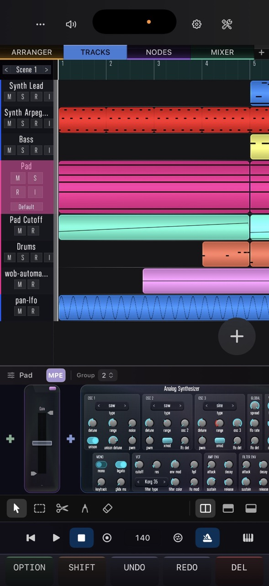
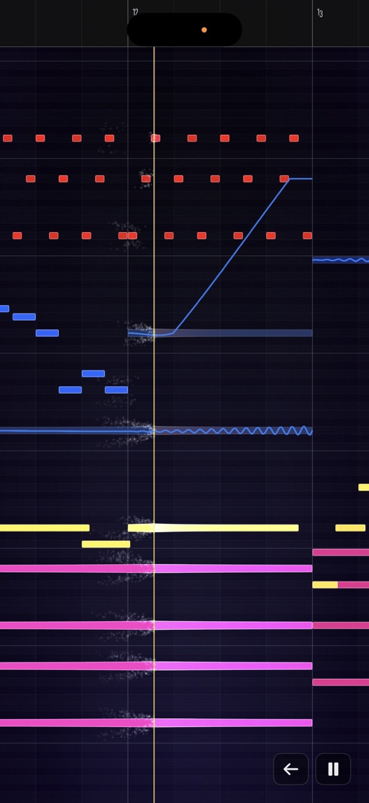
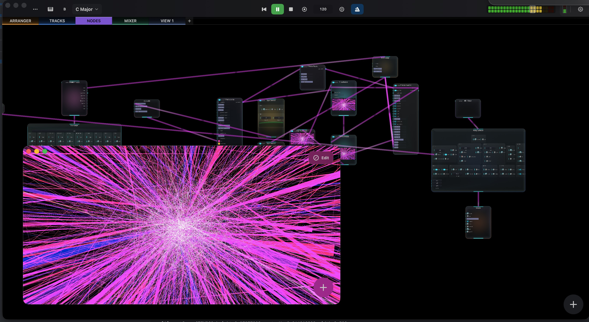
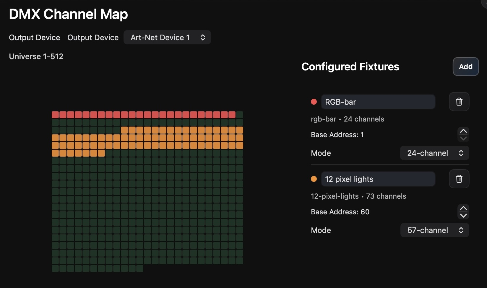
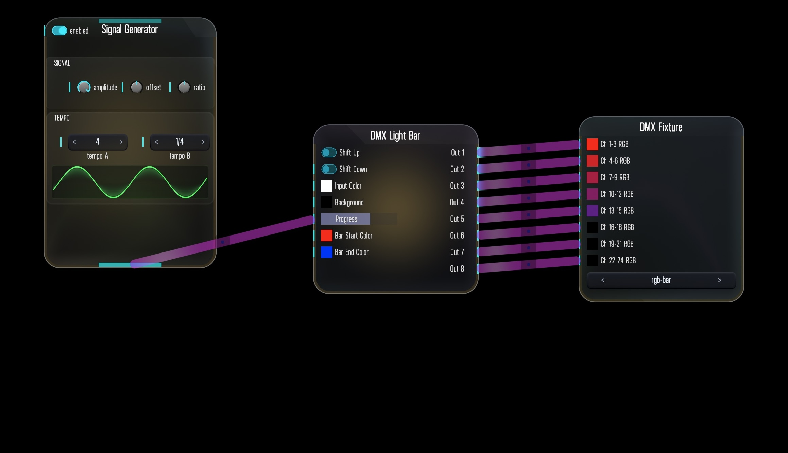
Built for the stage and the studio
A complete DAW on the surface, with an experimental layer of nodes, visuals, and lighting running underneath — every tool working together in real-time.
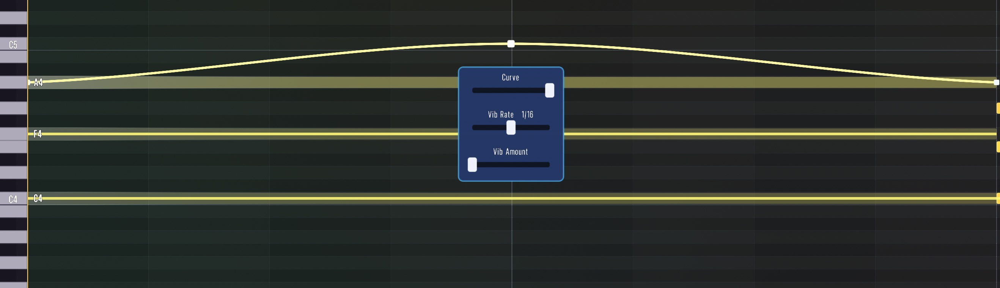
MPEiPhone, iPad, and Mac
Projects sync via iCloud. Start a session on your phone, continue on Mac.
MIDI controller supportWork in Progress
Map hardware to clips, transport, and parameters — with RGB pad feedback, encoder control, and screen or LED feedback on supported devices. Controller support is actively in development and growing.
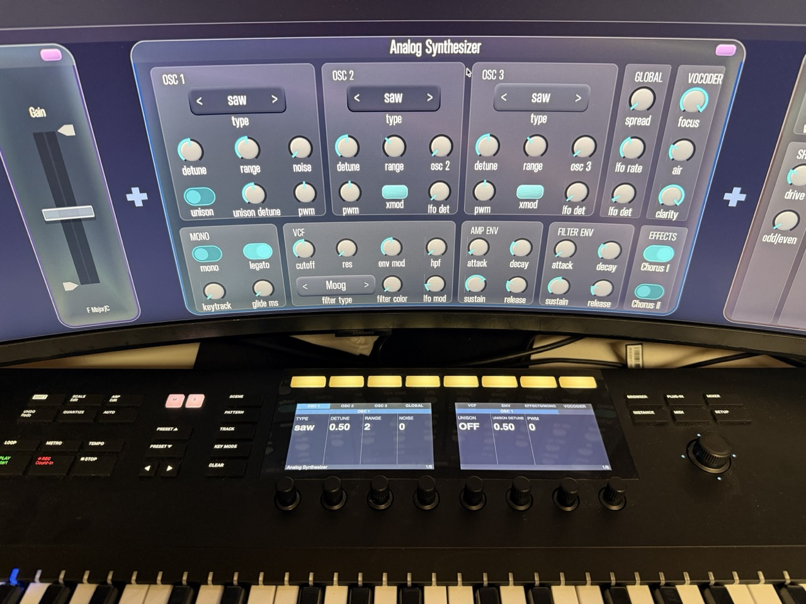
Currently supported devices:
Where it’s headed
Want the full picture?
The user documentation walks through every view, instrument, effect, and node in detail — from getting started to DMX lighting setup.